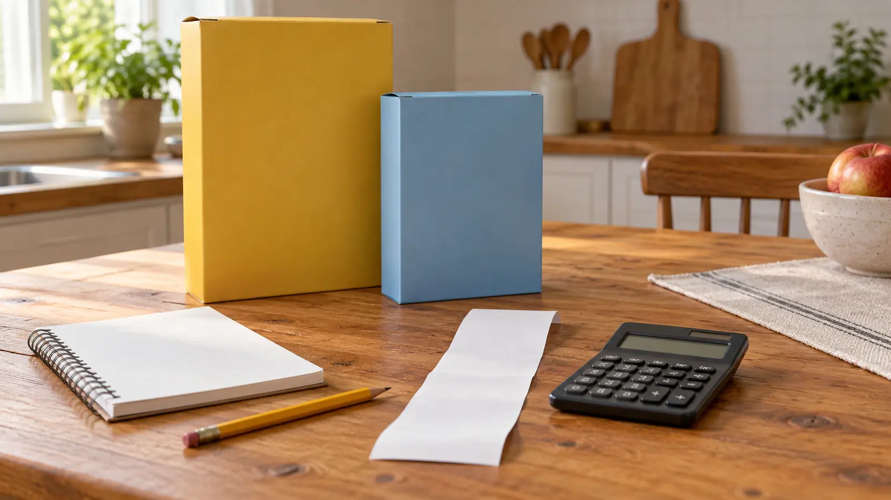

Item A: $2.40
One pretend pantry item. Write the amount in its own column.
AT HOME · 25 MINUTES · NO-SPEND · AGES 7–12 · EXPLORATION
Do not turn a shopping bill into a lecture about how expensive children are. Give them three prices, one fair comparison and permission to choose the smaller pack when it makes more sense.

Set out paper, pencil and a calculator you already own. An adult writes the three practice lines below. A real receipt is optional, and only the adult handles the original. Copy selected item names and prices onto a fresh sheet; omit payment digits, loyalty numbers, barcodes, transaction identifiers, address, date and location. Do not photograph or upload it. The lesson does not need proof of where the family shops.
Best fit: school-age children who can add money amounts with help. Ages seven to nine can count whole dollars and use a calculator for the cents. Older children can calculate and explain a unit price. These are editorial starting points, not developmental tests. Stop when the activity starts feeling like a surprise exam.
The FTC explains that shelf unit prices compare cost per ounce, pound or count. Our activity uses the same principle: price divided by amount = price per unit. Choose comparable products and the same unit. Do not divide dollars by ounces for one pack and dollars by servings for another, then declare a winner.
Pack A: 12 ounces for $3.00 → $3.00 ÷ 12 = $0.25 per ounce.
Pack B: 20 ounces for $4.00 → $4.00 ÷ 20 = $0.20 per ounce.
Pack B has the lower unit price. Pack A has the lower checkout price. If the practice spending cap is $3.50, B does not fit. If the family will use only 12 ounces before waste becomes a problem, the larger pack is not automatically the better household choice.
For an optional extension, ask what 20 ounces would cost at A’s rate: 20 × $0.25 = $5.00. That makes the rate difference visible without calling it a real-world saving. The example does not establish that two actual products are interchangeable, equally nutritious or suitable for an allergy.
An item total alone does not establish the package size, price per unit, regular shelf price or whether a discount required buying several. Deposits, coupons, taxable items and fees can complicate the final bill. Leave those out of the first exercise. On a real shopping day, compare shelf labels and package quantities, then ask a store employee about unclear charges rather than teaching a child to accuse someone of an error.
Children do not need to see debt, benefits, income or an adult’s financial anxiety to learn subtraction. Do not rank foods as morally good or bad, criticize another household’s purchases or ask a child to solve the family budget. Keep the question concrete: “What does this number tell us, and what does it not tell us?”
Five minutes: add the three items and stop. Reading is tiring: use A, B and C rather than long product names; let the child point or draw. Decimals are too much: start with $2, $3 and $1, then add cents another day. Older child wants more: invent a two-pack offer with equal units and write out the condition. Everyone wants a job: rotate estimator, calculator operator and evidence checker after one example.
This is an indoor plan with no weather dependency. Put water on a separate surface and use the bathroom before the short session. No food needs to be opened, tasted or cooked. Keep packaging away from younger children and use paper drawings if boxes become a distraction. Never turn the activity into a store scavenger hunt while an adult is trying to manage traffic, bags and siblings.
On a later normal shopping trip, an adult can invite one child to compare two suitable products the household already plans to buy. Establish the spending ceiling, dietary needs and amount required first. Give them a real choice inside those limits. Do not add an unplanned purchase as a reward for finishing the math. If the aisle is crowded or the child is finished, the lesson can stay on the kitchen table.
For another zero-spend evening, use the 45-minute library mission. For choosing time rather than spending money, use the family calendar reset. For a relaxed ending, the living-room picnic uses food already in the house. None requires extending the receipt exercise.
Skip when a child is hungry, arithmetic is already a source of distress, the household is in a tense money conversation, or an adult would be tempted to turn the sheet into a lecture. Choose a drawing or listening activity instead. Success is one useful distinction—subtotal versus total, or checkout price versus unit price—not a child who suddenly shops like an accountant.
The FTC’s unit-price explanation supports the comparison principle. The CFPB youth financial education resource provides age-appropriate teaching context, not endorsement of this activity. Reviewed October 18, 2026 by Mr Adventure Dad Editorial Desk. The schedule, fictional prices and answer key are original editorial material; calculations were checked independently. No real bill, claimed savings or personal financial data is published. Send a correction through About.
MAKE THE WEEK COUNT
Build the plan your family can finish well, then leave enough energy for the next part of the day.
More family plans